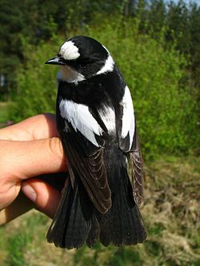
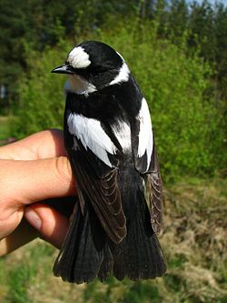

| Collared Flycatcher | |
|---|---|
|  | |
| Adult male | |
| Conservation status | |
| Binomial name | |
| Ficedula albicollis (Temminck, 1815) |
| Collared Flycatcher | |
|---|---|
|  | |
| Adult male | |
| Conservation status | |
| Binomial name | |
| Ficedula albicollis (Temminck, 1815) |
The Collared Flycatcher, Ficedula albicollis, is a small passerine bird in the Old World flycatcher family, one of the four species of Western Palearctic black-and-white flycatchers. It breeds in southeast Europe (isolated populations in the islands of Gotland and Oland in the Baltic Sea, Sweden) and southwest Asia and is migratory, wintering in sub Sahara Africa. It is a rare vagrant in western Europe.
This is a 12-13.5 cm long bird. The breeding male is mainly black above and white below, with a white collar, large white wing patch, black tail (although some males have white tail sides) and a large white forehead patch. It has a pale rump. The bill is black and has the broad but pointed shape typical of aerial insectivores. As well as taking insects in flight, this species hunts caterpillars amongst the oak foliage, and will take berries.
Non-breeding males, females and juveniles have the black replaced by a pale brown, and may be very difficult to distinguish from other Fidecula flycatchers, particularly the European Pied Flycatcher and the Semicollared Flycatcher, with which this species hybridizes to a limited extent (Veen et al. 2001).
They are birds of deciduous woodlands, parks and gardens, with a preference for old trees with cavities in which it nests. They build an open nest in a tree hole, or man-made nest-boxes. Normally 5-7 eggs are laid. The song is slow strained whistles, quite unlike the Pied Flycatcher. Pied flycatchers can mimic the song of the Collared Flycatcher in sympatric populations (Haavie et al. 2004).

.jpg){kind=link}